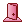
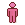

-
 [A lire] Je débute - Partie 1
[A lire] Je débute - Partie 1
-
[A lire] Je débute - Partie 2
-
[A lire] Je débute - Partie 3
-
Carte et terminaux du vaisseau
-
Légendes urbaines et mythes
-
Être mush - Premiers pas
-
Être mush - Tutoriel avancé
-
Compétences, mon compte, klix
-
Logs - Explications
-
Faire du roleplay
-
Guide de Survie (J10+)
-
Frieda - Tutoriel
-
Gioele - Tutoriel
-
Hua - Tutoriel
-
Roland - Tutoriel
-
Chun - Premiers pas
-
Chun - Tutoriel avancé
-
Eleesha - Premiers pas
-
Eleesha - Tutoriel avancé
-
Ian - Premiers pas
-
Ian - Tuto avancé
-
Janice - Premiers pas
-
Janice - Tutoriel avancé
-
Jin Su - Premiers pas
-
Jin Su - Tutoriel avancé
-
Kuan Ti - Premiers pas
-
Kuan Ti - Tutoriel avancé
-
Paola - Premiers pas
-
Paola - Tutoriel avancé
-
Raluca - Premiers pas
-
Raluca - Tutoriel avancé
-
Stephen - Premiers pas
-
Stephen - Tutoriel avancé
-
Terrence - Premiers Pas
-
Terrence - Tutoriel avancé
-
Finola - Tutoriel
-
Chao - Premiers Pas
-
Chao - Tutoriel avancé
-
Andie - Premiers pas
-
Andie - Tutoriel avancé
-
Derek - Tutoriel
-
Thème : L'astrophysique
-
Thème - La mécanique
-
L'enquête - Premiers pas
-
L'enquête - Avancé
-
Thème - La botanique
-
Recherches, projets et relais.
-
Thème : Le pilotage
-
Thème - Les expéditions
-
Titre : Responsable comm.
-
Titre : Commandant
-
Titre : Administrateur NERON
Être mush - Tutoriel avancé
Le rôle du mush peut être joué de diverses façons, selon vos envies et votre situation.
Plus on est de fous... Infecter des humains pour vous faire de nouveaux alliés fongiques peut être une très bonne idée : ça fait toujours un humain de moins pour un mush en plus, non ? Et selon qui vous contaminez, votre nouveau collègue pourra vous servir de diverses manières en ralentissant les recherches ou en menant l'enquête en bourrique, par exemple.
 - Contaminer des membres d'équipage en qui votre équipage a confiance peut-être une bonne idée.
- Contaminer des membres d'équipage en qui votre équipage a confiance peut-être une bonne idée.
En revanche, contaminer un inactif ne vous sera pas très utile.
Pour contaminer, je vous le rappelle, il vous faut :
- S'extirper une spore.
L'action est salissante et vous coûtera, de base, 2PA. Elle vous donnera une spore. Vous êtes, de base, limités à quatre spores par jour.
- Infecter votre cible.
Que ce soit directement, par poinçon ou bien de façon indirecte (En piégeant une salle ou une ration, par exemple, si vous avez les compétences pour). Notez que vous êtes limités, de base, à un poinçon par jour
- Au bout de trois spores, un humain se transforme en mush.
Attention : Les recherches réalisées au laboratoire vous rendront la contamination plus difficile, prenez garde !
Certaines de vos compétences facilitent la contamination :
-  Cuisine fongique vous permet de mettre des spores dans un consommable (Rations, médicaments, fruits...), contaminant celui qui le mangera. Petite astuce : vous pouvez mettre autant de spores que vous le voulez dans un seul et même consommable. Si vous en mettez assez, vous pourrez infecter un humain en un seul coup !
- Anonyme vous permet de dissimuler un mush sur la barre d'équipage. Choisissez-la juste après la contamination d'un membre d'équipage pour la dissimuler. Ni vu ni connu !
- Piégeur vous permet de piéger une sale. Le prochain qui y manipulera un objet se prendra une spore.
- Fertile vous donne droit à une extirpation gratuite par jour.
- Avec Esprit du mycéllium les mushs peuvent produire une spore de plus par jour.
- Infecteur vous permet de poinçonner deux fois par jour au lieu d'une.
Votre
équipage a désespérément besoin d'oxygène ? Attendez qu'ils soient en
orbite d'une planète, chargez du fuel et déplacez le vaisseau. Bilan :
les expéditionnaires meurent abandonnés sur la planète et votre équipage
est en panne d'O2.
Vous pouvez aussi leur donner des fausses directions, ça marche aussi.
Enfin, ça c'est la méthode brute. Vous risquez de vous faire tuer dès lors que vos camarades auront compris la supercherie. Mais il y a plus fourbe : avec la compétence traître, les mauvais événements sont plus nombreux dans les expéditions auxquelles vous prenez part.
Plus subtil, ceci fera sacrément galérer votre équipage. Mais gare, si vos expéditions sont trop malchanceuses ils pourront se douter de quelque chose.
Malin que vous êtes, vous avez discrètement saboté un équipement. Ceci le rendra indisponible et devra être réparé pour devenir fonctionnel à nouveau. Le hic, c'est que votre équipage risque de remonter jusqu'à vous, avec les logs.
Plan B : la compétence Gelée verte vous permet de faire en sorte à ce qu'un équipement se casse... Dans les cycles qui suivent.
Compétences utiles :
- Saboteur double vos chances de réussite dans le sabotage.
- Gelée verte offre l'action "Engluer" qui, une fois appliquée sur un équipement, le cassera dans les cycles qui viennent.
-  Portier vous permet de saboter une porte gratuitement par jour.
Passez
pour le parfait petit humain les premiers jours et vous serez vite
invités dans un groupe d'enquête. Vous n'aurez alors plus qu'à
subtilement suggérer que X est suspect puis regarder vos camarades le
tuer joyeusement.
Vous n'aurez même pas besoin de vous salir les mains !
Si pour vous il n'y a que la violence pour faire passer le message, le mush dispose de plusieurs compétences pour vous aider à faire un carnage dans les règles. C'est aussi un bon moyen de se rattraper, une fois découvert.
- Phagocytose qui vous donne 4 PA et vous soigne de 4 PV
 contre une spore.
contre une spore. - Dur à cuir qui réduit les dégâts reçus d'un point.
-  Transfert qui vous permet de changer de personnage avec un humain ayant une spore. Vous aurez ses PA, ses PM, ses PV et pourrez choisir ses compétences.
- Avec Ninja toutes vos attaques deviennent anonymes. "Quelqu'un met un formidable crochet du droit à bidule."
- Ne marche que pour les attaques à mains nues ! - Pyromane vous permet d'allumer un incendie pour 4PA.
-
Ian possède un statut qui augmente de 2PA le coût des agressions
effectuées dans sa salle. Pour se planquer après un carnage, c'est
l'idéal.
Et puis, si rien ne va plus, vous disposez de base de l'action "Muter". Contre 3PA, elle vous transformera en grand méchant pas beau, vous soignera quelques PV et vous donnera un bonus au combat. Aussi, les humains qui passeront dans votre pièce ne pourront repartir que par où ils sont entrés, parfait pour entraver le déplacement ennemi.
En revanche vous lâcherez tous vos objets et ne pourrez que saboter, frapper, ou vous déplacer - ce qui est moins cool.
Nous n'avons fait que survoler quelques stratégies, mais le mush possède plusieurs autres compétences qui ne manqueront pas de vous inspirer. Soyez créatifs !